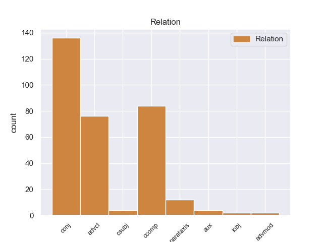
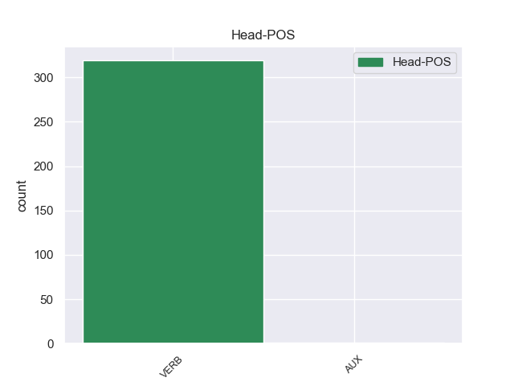
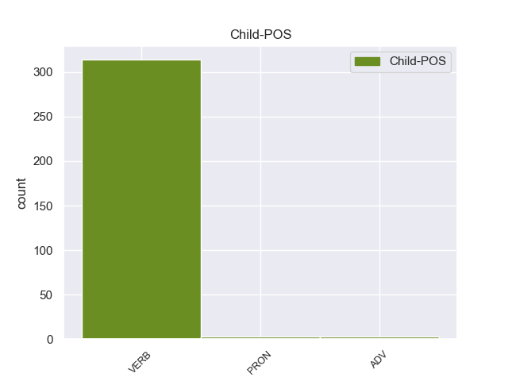

Distribution of features within this leaf



Agreement Rules sorted by frequency.
- When the dependent token is the conjunct(conj) of the head token, and the dependent token is VERB.
1 Η _ _ _ _ 0 _ _ _
2 εταιρεία _ _ _ _ 0 _ _ _
3 αυτή _ _ _ _ 0 _ _ _
4 σ _ _ _ _ 0 _ _ _
5 τη _ _ _ _ 0 _ _ _
6 Black _ _ _ _ 0 _ _ _
7 Country _ _ _ _ 0 _ _ _
8 σ _ _ _ _ 0 _ _ _
9 το _ _ _ _ 0 _ _ _
10 Ηνωμένο _ _ _ _ 0 _ _ _
11 Βασίλειο _ _ _ _ 0 _ _ _
12 απασχολεί απασχολείr VERB _ Mood=Ind|Number=Sing|Person=3|Tense=Pres|VerbForm=Fin 0 _ _ _
13 80 _ _ _ _ 0 _ _ _
14 άτομα _ _ _ _ 0 _ _ _
15 , _ _ _ _ 0 _ _ _
16 δηλαδή _ _ _ _ 0 _ _ _
17 80 _ _ _ _ 0 _ _ _
18 θέσεις _ _ _ _ 0 _ _ _
19 εργασίες _ _ _ _ 0 _ _ _
20 για _ _ _ _ 0 _ _ _
21 τις _ _ _ _ 0 _ _ _
22 οποίες _ _ _ _ 0 _ _ _
23 υπάρχει _ _ _ _ 0 _ _ _
24 μεγάλη _ _ _ _ 0 _ _ _
25 ανάγκη _ _ _ _ 0 _ _ _
26 , _ _ _ _ 0 _ _ _
27 και _ _ _ _ 0 _ _ _
28 συμμορφώνεται συμμορφώνεταιr VERB _ Mood=Ind|Number=Sing|Person=3|Tense=Pres|VerbForm=Fin 12 conj _ _
29 με _ _ _ _ 0 _ _ _
30 όλες _ _ _ _ 0 _ _ _
31 τις _ _ _ _ 0 _ _ _
32 κοινωνικές _ _ _ _ 0 _ _ _
33 προδιαγραφές _ _ _ _ 0 _ _ _
34 της _ _ _ _ 0 _ _ _
35 νομοθεσίας _ _ _ _ 0 _ _ _
36 του _ _ _ _ 0 _ _ _
37 Ηνωμένου _ _ _ _ 0 _ _ _
38 Βασιλείου _ _ _ _ 0 _ _ _
39 . _ _ _ _ 0 _ _ _
1 Θέλω _ _ _ _ 0 _ _ _
2 να _ _ _ _ 0 _ _ _
3 σχολιάσω _ _ _ _ 0 _ _ _
4 τις _ _ _ _ 0 _ _ _
5 παρατηρήσεις _ _ _ _ 0 _ _ _
6 του _ _ _ _ 0 _ _ _
7 κ. _ _ _ _ 0 _ _ _
8 MacCormick _ _ _ _ 0 _ _ _
9 διότι _ _ _ _ 0 _ _ _
10 μου _ _ _ _ 0 _ _ _
11 φαίνεται φαίνεταιr VERB _ Mood=Ind|Number=Sing|Person=3|Tense=Pres|VerbForm=Fin 0 _ _ _
12 ότι _ _ _ _ 0 _ _ _
13 διαμαρτυρείται διαμαρτυρείταιr VERB _ Mood=Ind|Number=Sing|Person=3|Tense=Pres|VerbForm=Fin 11 ccomp _ _
14 υπερβολικά _ _ _ _ 0 _ _ _
15 . _ _ _ _ 0 _ _ _
1 Αν _ _ _ _ 0 _ _ _
2 οι _ _ _ _ 0 _ _ _
3 εταιρείες _ _ _ _ 0 _ _ _
4 συμμορφωθούν συμμορφωθο VERB _ Mood=Ind|Number=Plur|Person=3|Tense=Pres|VerbForm=Fin 10 advcl _ _
5 με _ _ _ _ 0 _ _ _
6 αυτό _ _ _ _ 0 _ _ _
7 , _ _ _ _ 0 _ _ _
8 πρέπει _ _ _ _ 0 _ _ _
9 να _ _ _ _ 0 _ _ _
10 έχουν tουr VERB _ Mood=Ind|Number=Plur|Person=3|Tense=Pres|VerbForm=Fin 0 _ _ _
11 το _ _ _ _ 0 _ _ _
12 δικαίωμα _ _ _ _ 0 _ _ _
13 να _ _ _ _ 0 _ _ _
14 υποβάλλουν _ _ _ _ 0 _ _ _
15 προσφορές _ _ _ _ 0 _ _ _
16 για _ _ _ _ 0 _ _ _
17 συμβάσεις _ _ _ _ 0 _ _ _
18 . _ _ _ _ 0 _ _ _
1 Ωστόσο _ _ _ _ 0 _ _ _
2 , _ _ _ _ 0 _ _ _
3 εκφράζω εκφράζωr VERB _ Mood=Ind|Number=Sing|Person=3|Tense=Pres|VerbForm=Fin 0 _ _ _
4 ανησυχία _ _ _ _ 0 _ _ _
5 όσον _ _ _ _ 0 _ _ _
6 αφορά _ _ _ _ 0 _ _ _
7 το _ _ _ _ 0 _ _ _
8 ζήτημα _ _ _ _ 0 _ _ _
9 μιας _ _ _ _ 0 _ _ _
10 δικαστικής _ _ _ _ 0 _ _ _
11 απόφασης _ _ _ _ 0 _ _ _
12 που _ _ _ _ 0 _ _ _
13 δεν _ _ _ _ 0 _ _ _
14 είναι _ _ _ _ 0 _ _ _
15 ακόμη _ _ _ _ 0 _ _ _
16 τελεσίδικη _ _ _ _ 0 _ _ _
17 : _ _ _ _ 0 _ _ _
18 ενεργούμε ενεργοr VERB _ Mood=Ind|Number=Plur|Person=3|Tense=Pres|VerbForm=Fin 3 parataxis _ _
19 ως _ _ _ _ 0 _ _ _
20 δικαστής _ _ _ _ 0 _ _ _
21 και _ _ _ _ 0 _ _ _
22 ένορκοι _ _ _ _ 0 _ _ _
23 αν _ _ _ _ 0 _ _ _
24 αρνηθούμε _ _ _ _ 0 _ _ _
25 σε _ _ _ _ 0 _ _ _
26 κάποιον _ _ _ _ 0 _ _ _
27 το _ _ _ _ 0 _ _ _
28 δικαίωμα _ _ _ _ 0 _ _ _
29 να _ _ _ _ 0 _ _ _
30 είναι _ _ _ _ 0 _ _ _
31 υποψήφιος _ _ _ _ 0 _ _ _
32 για _ _ _ _ 0 _ _ _
33 μια _ _ _ _ 0 _ _ _
34 σύμβαση _ _ _ _ 0 _ _ _
35 χωρίς _ _ _ _ 0 _ _ _
36 να _ _ _ _ 0 _ _ _
37 έχει _ _ _ _ 0 _ _ _
38 εκδοθεί _ _ _ _ 0 _ _ _
39 τελική _ _ _ _ 0 _ _ _
40 απόφαση _ _ _ _ 0 _ _ _
41 ή _ _ _ _ 0 _ _ _
42 να _ _ _ _ 0 _ _ _
43 έχει _ _ _ _ 0 _ _ _
44 γίνει _ _ _ _ 0 _ _ _
45 ανάλυση _ _ _ _ 0 _ _ _
46 ως _ _ _ _ 0 _ _ _
47 προς _ _ _ _ 0 _ _ _
48 το _ _ _ _ 0 _ _ _
49 αν _ _ _ _ 0 _ _ _
50 ένα _ _ _ _ 0 _ _ _
51 άτομο _ _ _ _ 0 _ _ _
52 είναι _ _ _ _ 0 _ _ _
53 ένοχο _ _ _ _ 0 _ _ _
54 για _ _ _ _ 0 _ _ _
55 ένα _ _ _ _ 0 _ _ _
56 αδίκημα _ _ _ _ 0 _ _ _
57 ή _ _ _ _ 0 _ _ _
58 όχι _ _ _ _ 0 _ _ _
59 . _ _ _ _ 0 _ _ _
1 Πρέπει πρέπer VERB _ Mood=Ind|Number=Sing|Person=3|Tense=Pres|VerbForm=Fin 0 _ _ _
2 να _ _ _ _ 0 _ _ _
3 υπάρχουν υπάρχουr VERB _ Mood=Ind|Number=Plur|Person=3|Tense=Pres|VerbForm=Fin 1 csubj _ _
4 κανόνες _ _ _ _ 0 _ _ _
5 που _ _ _ _ 0 _ _ _
6 θα _ _ _ _ 0 _ _ _
7 προστατεύουν _ _ _ _ 0 _ _ _
8 τους _ _ _ _ 0 _ _ _
9 πολίτες _ _ _ _ 0 _ _ _
10 και _ _ _ _ 0 _ _ _
11 τους _ _ _ _ 0 _ _ _
12 καταναλωτές _ _ _ _ 0 _ _ _
13 . _ _ _ _ 0 _ _ _
1 Επιτρέψτε _ _ _ _ 0 _ _ _
2 μου _ _ _ _ 0 _ _ _
3 , _ _ _ _ 0 _ _ _
4 κύριε _ _ _ _ 0 _ _ _
5 Πρόεδρε _ _ _ _ 0 _ _ _
6 , _ _ _ _ 0 _ _ _
7 να _ _ _ _ 0 _ _ _
8 αναλύσω _ _ _ _ 0 _ _ _
9 τους _ _ _ _ 0 _ _ _
10 έξι _ _ _ _ 0 _ _ _
11 στόχους _ _ _ _ 0 _ _ _
12 της _ _ _ _ 0 _ _ _
13 ισπανικής _ _ _ _ 0 _ _ _
14 Προεδρίας _ _ _ _ 0 _ _ _
15 που _ _ _ _ 0 _ _ _
16 εσείς εer PRON _ Mood=Sub|Number=Plur|Person=3|Tense=Imp|VerbForm=Fin 17 iobj _ _
17 συνοψίσατε συνοψίσαr VERB _ Mood=Sub|Number=Sing|Person=3|Tense=Pres|VerbForm=Fin 0 _ _ _
18 σε _ _ _ _ 0 _ _ _
19 τρεις _ _ _ _ 0 _ _ _
20 κατευθύνσεις _ _ _ _ 0 _ _ _
21 , _ _ _ _ 0 _ _ _
22 υπό _ _ _ _ 0 _ _ _
23 το _ _ _ _ 0 _ _ _
24 πρίσμα _ _ _ _ 0 _ _ _
25 αυτής _ _ _ _ 0 _ _ _
26 της _ _ _ _ 0 _ _ _
27 προσέγγισης _ _ _ _ 0 _ _ _
28 . _ _ _ _ 0 _ _ _
1 Σύμφωνα _ _ _ _ 0 _ _ _
2 με _ _ _ _ 0 _ _ _
3 πληροφορίες _ _ _ _ 0 _ _ _
4 , _ _ _ _ 0 _ _ _
5 μονάχα _ _ _ _ 0 _ _ _
6 την _ _ _ _ 0 _ _ _
7 Παρασκευή _ _ _ _ 0 _ _ _
8 σκοτώθηκαν _ _ _ _ 0 _ _ _
9 31 _ _ _ _ 0 _ _ _
10 άτομα _ _ _ _ 0 _ _ _
11 ( _ _ _ _ 0 _ _ _
12 ενώ _ _ _ _ 0 _ _ _
13 συνολικά _ _ _ _ 0 _ _ _
14 φαίνεται φαίνεταιr VERB _ Mood=Ind|Number=Sing|Person=3|Tense=Pres|VerbForm=Fin 16 aux _ _
15 πως _ _ _ _ 0 _ _ _
16 σκοτώθηκαν σκοτώθηκ VERB _ Mood=Ind|Number=Plur|Person=3|Tense=Past|VerbForm=Fin 0 _ _ _
17 37-40 _ _ _ _ 0 _ _ _
18 άτομα _ _ _ _ 0 _ _ _
19 ) _ _ _ _ 0 _ _ _
20 κατά _ _ _ _ 0 _ _ _
21 τη _ _ _ _ 0 _ _ _
22 διάρκεια _ _ _ _ 0 _ _ _
23 80 _ _ _ _ 0 _ _ _
24 ανεμοστρόβιλων _ _ _ _ 0 _ _ _
25 , _ _ _ _ 0 _ _ _
26 οι _ _ _ _ 0 _ _ _
27 οποίοι _ _ _ _ 0 _ _ _
28 έπληξαν _ _ _ _ 0 _ _ _
29 τις _ _ _ _ 0 _ _ _
30 κεντρικές _ _ _ _ 0 _ _ _
31 πολιτείες _ _ _ _ 0 _ _ _
32 των _ _ _ _ 0 _ _ _
33 ΗΠΑ _ _ _ _ 0 _ _ _
34 την _ _ _ _ 0 _ _ _
35 Παρασκευή _ _ _ _ 0 _ _ _
36 . _ _ _ _ 0 _ _ _
1 Η _ _ _ _ 0 _ _ _
2 παρούσα _ _ _ _ 0 _ _ _
3 πρόταση _ _ _ _ 0 _ _ _
4 πραγματικά πραγματικά ADV _ Mood=Ind|Number=Sing|Person=3|Tense=Pres|VerbForm=Fin 5 advmod _ _
5 συμπληρώνει συμπληρώνειr VERB _ Mood=Ind|Number=Sing|Person=3|Tense=Pres|VerbForm=Fin 0 _ _ _
6 και _ _ _ _ 0 _ _ _
7 βασίζεται _ _ _ _ 0 _ _ _
8 σ _ _ _ _ 0 _ _ _
9 τις _ _ _ _ 0 _ _ _
10 προτάσεις _ _ _ _ 0 _ _ _
11 που _ _ _ _ 0 _ _ _
12 εξετάζονται _ _ _ _ 0 _ _ _
13 αυτή _ _ _ _ 0 _ _ _
14 τη _ _ _ _ 0 _ _ _
15 στιγμή _ _ _ _ 0 _ _ _
16 σ _ _ _ _ 0 _ _ _
17 την _ _ _ _ 0 _ _ _
18 πρόταση _ _ _ _ 0 _ _ _
19 της _ _ _ _ 0 _ _ _
20 Επιτροπής _ _ _ _ 0 _ _ _
21 , _ _ _ _ 0 _ _ _
22 σχετικά _ _ _ _ 0 _ _ _
23 με _ _ _ _ 0 _ _ _
24 ένα _ _ _ _ 0 _ _ _
25 νέο _ _ _ _ 0 _ _ _
26 πρόγραμμα _ _ _ _ 0 _ _ _
27 κοινοτικής _ _ _ _ 0 _ _ _
28 δράσης _ _ _ _ 0 _ _ _
29 σ _ _ _ _ 0 _ _ _
30 τον _ _ _ _ 0 _ _ _
31 τομέα _ _ _ _ 0 _ _ _
32 της _ _ _ _ 0 _ _ _
33 δημόσιας _ _ _ _ 0 _ _ _
34 υγείας _ _ _ _ 0 _ _ _
35 . _ _ _ _ 0 _ _ _
1 Θα θα PRON _ Mood=Ind|Number=Sing|Person=1|Tense=Pres|VerbForm=Fin 2 aux _ _
2 εργαστούμε εργαστού VERB _ Mood=Ind|Number=Plur|Person=3|Tense=Past|VerbForm=Fin 0 _ _ _
3 , _ _ _ _ 0 _ _ _
4 και _ _ _ _ 0 _ _ _
5 δεσμεύομαι _ _ _ _ 0 _ _ _
6 γι' _ _ _ _ 0 _ _ _
7 αυτό _ _ _ _ 0 _ _ _
8 σήμερα _ _ _ _ 0 _ _ _
9 σ _ _ _ _ 0 _ _ _
10 την _ _ _ _ 0 _ _ _
11 Ομάδα _ _ _ _ 0 _ _ _
12 μου _ _ _ _ 0 _ _ _
13 , _ _ _ _ 0 _ _ _
14 για _ _ _ _ 0 _ _ _
15 να _ _ _ _ 0 _ _ _
16 εκπληρωθούν _ _ _ _ 0 _ _ _
17 αυτοί _ _ _ _ 0 _ _ _
18 οι _ _ _ _ 0 _ _ _
19 στόχοι _ _ _ _ 0 _ _ _
20 σ _ _ _ _ 0 _ _ _
21 το _ _ _ _ 0 _ _ _
22 μέλλον _ _ _ _ 0 _ _ _
23 και _ _ _ _ 0 _ _ _
24 θα _ _ _ _ 0 _ _ _
25 το _ _ _ _ 0 _ _ _
26 κάνουμε _ _ _ _ 0 _ _ _
27 μαζί _ _ _ _ 0 _ _ _
28 με _ _ _ _ 0 _ _ _
29 την _ _ _ _ 0 _ _ _
30 Επιτροπή _ _ _ _ 0 _ _ _
31 και _ _ _ _ 0 _ _ _
32 το _ _ _ _ 0 _ _ _
33 Συμβούλιο _ _ _ _ 0 _ _ _
34 . _ _ _ _ 0 _ _ _
1 Εργαστήκαμε _ _ _ _ 0 _ _ _
2 πολύ _ _ _ _ 0 _ _ _
3 σκληρά _ _ _ _ 0 _ _ _
4 πάνω _ _ _ _ 0 _ _ _
5 σ _ _ _ _ 0 _ _ _
6 τις _ _ _ _ 0 _ _ _
7 προτάσεις _ _ _ _ 0 _ _ _
8 της _ _ _ _ 0 _ _ _
9 Επιτροπής _ _ _ _ 0 _ _ _
10 και _ _ _ _ 0 _ _ _
11 τώρα _ _ _ _ 0 _ _ _
12 θα er ADV _ Mood=Ind|Number=Plur|Person=3|Tense=Imp|VerbForm=Fin 13 aux _ _
13 είχαμε είχr VERB _ Mood=Ind|Number=Plur|Person=3|Tense=Past|VerbForm=Fin 0 _ _ _
14 ήδη _ _ _ _ 0 _ _ _
15 αυτή _ _ _ _ 0 _ _ _
16 την _ _ _ _ 0 _ _ _
17 πολιτική _ _ _ _ 0 _ _ _
18 , _ _ _ _ 0 _ _ _
19 αν _ _ _ _ 0 _ _ _
20 δεν _ _ _ _ 0 _ _ _
21 υπήρχε _ _ _ _ 0 _ _ _
22 η _ _ _ _ 0 _ _ _
23 αναποτελεσματικότητα _ _ _ _ 0 _ _ _
24 του _ _ _ _ 0 _ _ _
25 Συμβουλίου _ _ _ _ 0 _ _ _
26 , _ _ _ _ 0 _ _ _
27 που _ _ _ _ 0 _ _ _
28 ανέβαλε _ _ _ _ 0 _ _ _
29 τις _ _ _ _ 0 _ _ _
30 διαβουλεύσεις _ _ _ _ 0 _ _ _
31 μας _ _ _ _ 0 _ _ _
32 για _ _ _ _ 0 _ _ _
33 τον _ _ _ _ 0 _ _ _
34 Δεκέμβριο _ _ _ _ 0 _ _ _
35 . _ _ _ _ 0 _ _ _
Disagree Examples:
1 Se _ _ _ _ 0 _ _ _
2 teme temer VERB _ Mood=Ind|Number=Sing|Person=3|Tense=Pres|VerbForm=Fin 0 _ _ _
3 que _ _ _ _ 0 _ _ _
4 estos _ _ _ _ 0 _ _ _
5 obtengan obtener VERB _ Mood=Sub|Number=Plur|Person=3|Tense=Pres|VerbForm=Fin 2 csubj _ _
6 monopolios _ _ _ _ 0 _ _ _
7 en _ _ _ _ 0 _ _ _
8 los _ _ _ _ 0 _ _ _
9 contratos _ _ _ _ 0 _ _ _
10 de _ _ _ _ 0 _ _ _
11 construcción _ _ _ _ 0 _ _ _
12 intimidando _ _ _ _ 0 _ _ _
13 a _ _ _ _ 0 _ _ _
14 los _ _ _ _ 0 _ _ _
15 competidores _ _ _ _ 0 _ _ _
16 y _ _ _ _ 0 _ _ _
17 sobornando _ _ _ _ 0 _ _ _
18 las _ _ _ _ 0 _ _ _
19 autoridades _ _ _ _ 0 _ _ _
20 locales _ _ _ _ 0 _ _ _
21 para _ _ _ _ 0 _ _ _
22 que _ _ _ _ 0 _ _ _
23 sobrecarguen _ _ _ _ 0 _ _ _
24 el _ _ _ _ 0 _ _ _
25 presupuesto _ _ _ _ 0 _ _ _
26 y _ _ _ _ 0 _ _ _
27 así _ _ _ _ 0 _ _ _
28 obtener _ _ _ _ 0 _ _ _
29 cuantiosos _ _ _ _ 0 _ _ _
30 beneficios _ _ _ _ 0 _ _ _
31 . _ _ _ _ 0 _ _ _
1 O'Neill _ _ _ _ 0 _ _ _
2 cree _ _ _ _ 0 _ _ _
3 que _ _ _ _ 0 _ _ _
4 K'tano _ _ _ _ 0 _ _ _
5 lo _ _ _ _ 0 _ _ _
6 envía _ _ _ _ 0 _ _ _
7 porque _ _ _ _ 0 _ _ _
8 sabe saber VERB _ Mood=Ind|Number=Sing|Person=3|Tense=Pres|VerbForm=Fin 0 _ _ _
9 que _ _ _ _ 0 _ _ _
10 no _ _ _ _ 0 _ _ _
11 regresara regresar VERB _ Mood=Sub|Number=Sing|Person=3|Tense=Imp|VerbForm=Fin 8 ccomp _ _
12 con _ _ _ _ 0 _ _ _
13 vida _ _ _ _ 0 _ _ _
14 , _ _ _ _ 0 _ _ _
15 e _ _ _ _ 0 _ _ _
16 intenta _ _ _ _ 0 _ _ _
17 convencer _ _ _ _ 0 _ _ _
18 a _ _ _ _ 0 _ _ _
19 Teal'c _ _ _ _ 0 _ _ _
20 para _ _ _ _ 0 _ _ _
21 que _ _ _ _ 0 _ _ _
22 no _ _ _ _ 0 _ _ _
23 lo _ _ _ _ 0 _ _ _
24 haga _ _ _ _ 0 _ _ _
25 , _ _ _ _ 0 _ _ _
26 pero _ _ _ _ 0 _ _ _
27 sin _ _ _ _ 0 _ _ _
28 éxito _ _ _ _ 0 _ _ _
29 . _ _ _ _ 0 _ _ _
1 O'Neill _ _ _ _ 0 _ _ _
2 cree _ _ _ _ 0 _ _ _
3 que _ _ _ _ 0 _ _ _
4 K'tano _ _ _ _ 0 _ _ _
5 lo _ _ _ _ 0 _ _ _
6 envía _ _ _ _ 0 _ _ _
7 porque _ _ _ _ 0 _ _ _
8 sabe _ _ _ _ 0 _ _ _
9 que _ _ _ _ 0 _ _ _
10 no _ _ _ _ 0 _ _ _
11 regresara _ _ _ _ 0 _ _ _
12 con _ _ _ _ 0 _ _ _
13 vida _ _ _ _ 0 _ _ _
14 , _ _ _ _ 0 _ _ _
15 e _ _ _ _ 0 _ _ _
16 intenta intentar VERB _ Mood=Ind|Number=Sing|Person=3|Tense=Pres|VerbForm=Fin 0 _ _ _
17 convencer _ _ _ _ 0 _ _ _
18 a _ _ _ _ 0 _ _ _
19 Teal'c _ _ _ _ 0 _ _ _
20 para _ _ _ _ 0 _ _ _
21 que _ _ _ _ 0 _ _ _
22 no _ _ _ _ 0 _ _ _
23 lo _ _ _ _ 0 _ _ _
24 haga hacer VERB _ Mood=Sub|Number=Sing|Person=3|Tense=Pres|VerbForm=Fin 16 advcl _ SpaceAfter=No
25 , _ _ _ _ 0 _ _ _
26 pero _ _ _ _ 0 _ _ _
27 sin _ _ _ _ 0 _ _ _
28 éxito _ _ _ _ 0 _ _ _
29 . _ _ _ _ 0 _ _ _
1 Nunca _ _ _ _ 0 _ _ _
2 he _ _ _ _ 0 _ _ _
3 visto _ _ _ _ 0 _ _ _
4 un _ _ _ _ 0 _ _ _
5 spa _ _ _ _ 0 _ _ _
6 en _ _ _ _ 0 _ _ _
7 el _ _ _ _ 0 _ _ _
8 que _ _ _ _ 0 _ _ _
9 te _ _ _ _ 0 _ _ _
10 digan _ _ _ _ 0 _ _ _
11 que _ _ _ _ 0 _ _ _
12 por _ _ _ _ 0 _ _ _
13 narices _ _ _ _ 0 _ _ _
14 tienes _ _ _ _ 0 _ _ _
15 que _ _ _ _ 0 _ _ _
16 entrar _ _ _ _ 0 _ _ _
17 a _ _ _ _ 0 _ _ _
18 la _ _ _ _ 0 _ _ _
19 piscina _ _ _ _ 0 _ _ _
20 a _ _ _ _ 0 _ _ _
21 la _ _ _ _ 0 _ _ _
22 hora _ _ _ _ 0 _ _ _
23 que _ _ _ _ 0 _ _ _
24 a _ _ _ _ 0 _ _ _
25 ellos _ _ _ _ 0 _ _ _
26 les _ _ _ _ 0 _ _ _
27 de _ _ _ _ 0 _ _ _
28 la _ _ _ _ 0 _ _ _
29 gana _ _ _ _ 0 _ _ _
30 , _ _ _ _ 0 _ _ _
31 y _ _ _ _ 0 _ _ _
32 como _ _ _ _ 0 _ _ _
33 a _ _ _ _ 0 _ _ _
34 nosotros _ _ _ _ 0 _ _ _
35 no _ _ _ _ 0 _ _ _
36 nos _ _ _ _ 0 _ _ _
37 cuadraba cuadrar VERB _ Mood=Ind|Number=Sing|Person=3|Tense=Imp|VerbForm=Fin 41 advcl _ SpaceAfter=No
38 , _ _ _ _ 0 _ _ _
39 pues _ _ _ _ 0 _ _ _
40 nos _ _ _ _ 0 _ _ _
41 quedamos quedar VERB _ Mood=Sub|Number=Plur|Person=1|Tense=Pres|VerbForm=Fin 0 _ _ _
42 sin _ _ _ _ 0 _ _ _
43 disfrutar _ _ _ _ 0 _ _ _
44 de _ _ _ _ 0 _ _ _
45 el _ _ _ _ 0 _ _ _
46 spa _ _ _ _ 0 _ _ _
47 gracias _ _ _ _ 0 _ _ _
48 a _ _ _ _ 0 _ _ _
49 la _ _ _ _ 0 _ _ _
50 recepcionista _ _ _ _ 0 _ _ _
51 . _ _ _ _ 0 _ _ _
1 En _ _ _ _ 0 _ _ _
2 batalla _ _ _ _ 0 _ _ _
3 , _ _ _ _ 0 _ _ _
4 aumenta aumentar VERB _ Mood=Ind|Number=Sing|Person=3|Tense=Pres|VerbForm=Fin 0 _ _ _
5 las _ _ _ _ 0 _ _ _
6 características _ _ _ _ 0 _ _ _
7 de _ _ _ _ 0 _ _ _
8 Bowser _ _ _ _ 0 _ _ _
9 , _ _ _ _ 0 _ _ _
10 ya _ _ _ _ 0 _ _ _
11 sea ser VERB _ Mood=Sub|Number=Sing|Person=3|Tense=Pres|VerbForm=Fin 4 advcl _ _
12 ataque _ _ _ _ 0 _ _ _
13 o _ _ _ _ 0 _ _ _
14 HP _ _ _ _ 0 _ _ _
15 . _ _ _ _ 0 _ _ _